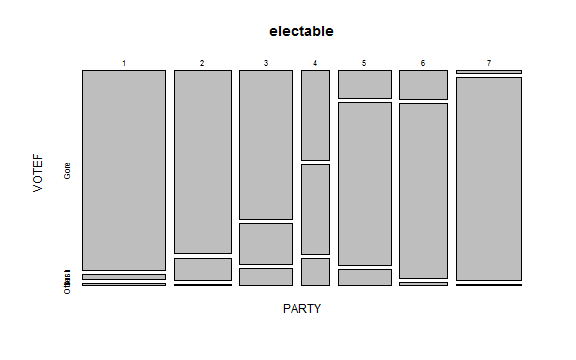
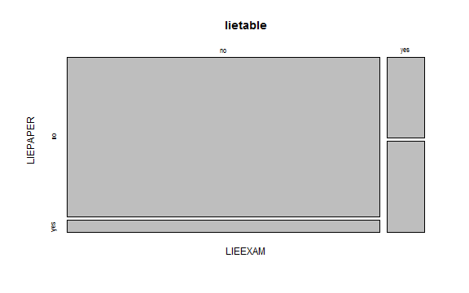
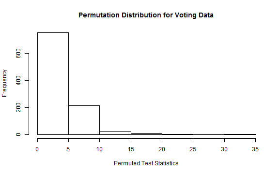
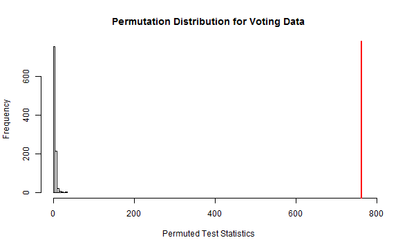
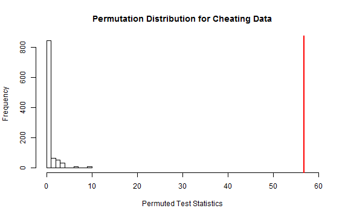
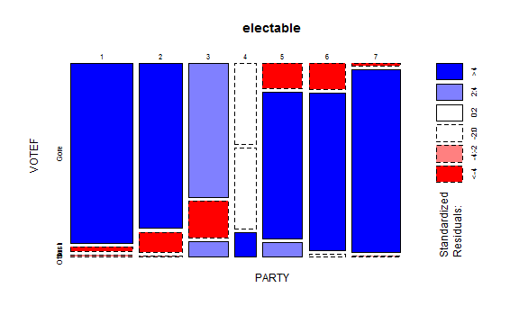
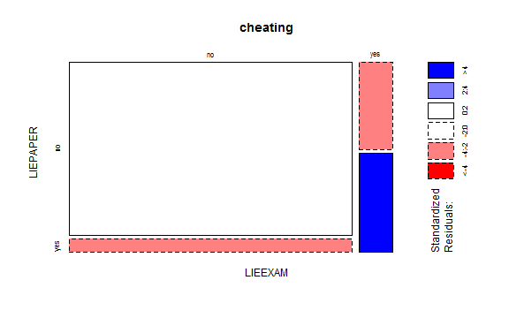

Chi-Square Activity
Ch 4 Chi-Square Testing
Stay 217
2015-03-08
Introduction
This activity works through Chapter 4. It uses two datasets: the voting data (which we have covered in class) and the lying and cheating data from Section 4.9 of the book. All tests will be done at the \(\alpha = 0.05\) significance level.
There will be 8 questions for your to turn in. Some are located throughout the activity and some are located at the end.
Voting Data
A national random sample was obtained related to the 2000 Presidential Election with the party affiliations and voting results recorded for each subject. Information on 1151 people was recorded. Since these people were selected from the entire population of voters, and independence test is appropriate.
We will test at the \(\alpha\) = 0.05 significance level. The contingency table is presented below.
require(poLCA)
data(election)
# remove missing data
election2 <- na.omit(election[, c("PARTY", "VOTE3")])
# recoding the variables
election2$VOTEF <- factor(election2$VOTE3)
levels(election2$VOTEF) <- c("Gore", "Bush", "Other")
# forming a contingency table
require(mosaic)
electable <- tally(~PARTY + VOTEF, data = election2)
electable
#> VOTEF
#> PARTY Gore Bush Other
#> 1 238 6 2
#> 2 151 18 1
#> 3 113 31 13
#> 4 37 37 11
#> 5 21 124 12
#> 6 20 121 2
#> 7 3 189 1
Looking at the contingency table, it appears that people in Parties 1, 2, and 3 are much more likely to vote for Gore so these are probably the more liberal parties.
Cheating Data
The first data set we'll work with explores student behavior. A survey of 319 randomly selected undergraduate students at a university were asked whether they had ever lied to avoid taking an exam and if they had lied to avoid handing a paper on time. The results are summarized below in a contingency table.
require(poLCA)
require(mosaic)
data(cheating)
# turning the variables into factors
cheating$LIEEXAM <- factor(cheating$LIEEXAM, labels = c("no", "yes"))
cheating$LIEPAPER <- factor(cheating$LIEPAPER, labels = c("no", "yes"))
lietable <- tally(~LIEEXAM + LIEPAPER, data = cheating)
lietable
#> LIEPAPER
#> LIEEXAM no yes
#> no 265 20
#> yes 16 18
Which type of test and which type of plot should be used?
- Independence; segmented bar chart
- Homogeneity; segmented bar chart
- Independence; mosaic plot
- Homogeneity; mosaic plot
Were the subjects randomly selected from the entire population? Or were subjects selected from within each group of students?
A sample was drawn from the entire population of undergraduate students so an independence test should be used.
Mosaic Plots
Plot for the Voting Data
A mosaic plot of the voting data is also shown below. It appears that not all the same groups vote for the candidates with similar probabilities so party and vote are probably related. Furthermore, we can see that parties 1, 2, and 3 were much more likely to vote for Gore. Parties 5, 6, and 7 were much more likely to vote for Bush. Almost all of the "Other" votes can from parties 3, 4, and 5.
mosaicplot(electable)

Plot for the Cheating Data
A mosaic plot of the cheating data is shown below.
mosaicplot(lietable)

Take Home Question #1
1) Use the mosaic plot to describe the cheating data. Make sure that you note whether the two variables appear to be related.
Hypothesis Tests
Hypotheses for Voting data
For the voting data, our hypotheses are:
\(H_0:\) There is no relationship between party affiliation and voting status in the population
\(H_A:\) There is a relationship between party affiliation and voting status in the population
Hypotheses for Cheating data
For the voting data, which is the correct null hypothesis (\(H_0\))?
- The true mean rate of lying on exams is the same for all types of students
- There is no relationship between lying on exams and lying on paper amongst undergradtuate students
- The true mean rate of lying on papers is the same for each undergraduate student
- None of the above
Take a look back at the notes to see what the independence test is hypothesizing
An independence test assumes that there is no relationship between the two variables in the population.
Assumptions
Which of the following are the correct assumptions for a Chi-Squared test? Make sure you click "Show Answer" to check that you got all of them
- Independence
- Normality
- Equal Variance
- Both variables are categorical
- Any Expected Count
- Expected Counts \(> 5\) for a parametric test
- Expected Counts \(> 0\) for a non-parametric test
Remember that both variables are categorical. So normality and equal variance don't make sense for these data.
Parametric tests make stronger assumptions than non-parametric tests so we need larger expected counts for a parametric test.
Expected Counts
Expected Counts for Voting Data
To find the expected counts for a cell under the null hypothesis, we multiply the row total (for that cell's row) by the column total and divide by the total sample size. The contingency table for the cheating data is below. The expected count for the number of people in Party 1 who voted for Gore is:
\(\frac{n_{Party1.} * n_{.Gore}}{N} = \frac{246*583}{1151} \approx 125\)
Expected Counts for Cheating data
Here is the contingency table for the cheating data:
tally(~LIEEXAM + LIEPAPER, data = cheating, margin = T)
#> LIEPAPER
#> LIEEXAM no yes Total
#> no 265 20 285
#> yes 16 18 34
#> Total 281 38 319
What are the expected counts for the cells? Round to the nearest whole number.
- No Lie Exam, No Lie Paper
- No Lie Exam, Did Lie Paper
- Did Lie Exam, Did Lie Paper
Find the cell I'm asking for, then use the row and column totals for that cell
251 This is in the first row, first column so we do \(285*281/319 = 251\)$
34 This is in the first row, second column so we do \(285*38/319 = 34\)
4 This is in the fourth row, second column so we do \(34*38/319 = 4\)
Assessing the Assumptions
Assumptions for Voting Data
There are assumptions we have to meet to perform a chi-square test. For the voting data:
1) Independence - Yes: a random sample was taken and there are no obvious lurking variables
2) Categorical Variables - Yes: both variables are categorical
3) Expected Counts - No: not all the expected counts are greater than 5 so the assumptions for the parametric chi-square test are not met (the assumptions for the non-parametric one are met though)
chisq.test(electable)$expected
#> VOTEF
#> PARTY Gore Bush Other
#> 1 124.6 112.4 8.98
#> 2 86.1 77.7 6.20
#> 3 79.5 71.7 5.73
#> 4 43.1 38.8 3.10
#> 5 79.5 71.7 5.73
#> 6 72.4 65.4 5.22
#> 7 97.8 88.2 7.04
Assumptions for Cheating Data
Here is the table of expected counts for the cheating data. Based on the description of the data and the table of expected counts below, which of the assumptions for a parametric test are met?
chisq.test(lietable)$expected
#> LIEPAPER
#> LIEEXAM no yes
#> no 251.1 33.95
#> yes 29.9 4.05
- Independence
- Categorical Variables
- Expected Counts are greater than 5
- All of the assumptions are met
You should get that three of the assumptions are met and that one is not.
The Expected Counts are not all greater than 5 so the assumptions for a parametric test are not met. As a result, we will use a non-parametric test.
Contributions to the Test Statistic
To calculate the test statistic, we sum the contributions from each cell of the contingency table. Recall that the contribution for a single cell is:
\((\frac{observed - expected}{\sqrt{expected}})^2\)
Voting Contributions
The contribution for the Party1, Gore cell is:
\((\frac{238 - 125}{\sqrt{125}})^2 \approx 102\)
Cheating Contributions
What are the contributions for the following cells? Round to the nearest whole number.
- No Lie Exam, No Lie Paper
- Did Lie Exam, Did Lie Paper
Use the observed and expected counts that we have previously found.
1 \((\frac{265 - 251}{\sqrt{251}})^2 \approx 1\)
49 \((\frac{18 - 4}{\sqrt{4}})^2 = 49\)
Testing Statistic, Distribution and P-value
Voting Data
SUPER IMPORTANT NOTE: The assumptions for a parametric test are not met. You should not trust the results from this test. We are doing this FOR PRACTICE ONLY. Ask if you are confused about this.
We get a p-value of \(< 2.2*10^{-16}\) (test statistic of 764; following a \(\chi^2(12)\) under the null).
chisq.test(electable)
#>
#> Pearson's Chi-squared test
#>
#> data: electable
#> X-squared = 764, df = 12, p-value < 2.2e-16
Cheating Data
Here's the output from a Chi-Squared Test. Round your answers to one decimal place.
chisq.test(lietable)
#>
#> Pearson's Chi-squared test with Yates' continuity correction
#>
#> data: lietable
#> X-squared = 56.8, df = 1, p-value = 4.94e-14
- What is the test statistic?
- For a parametric test, what distribution does it follow under the null hypothesis? Type 1 for a t-distribution, 2 for an F-distribution, 3 for a \(\chi^2\) distribution.
- How may degrees of freedom does this distribution have?
- What is the p-value for a parametric test?
Match the output to each corresponding entry. Don't forget what R means by 4.94e-14.
- 56.8 The "X-squared" part tell us the test statistic.
- 3 This test uses a \(\chi^2\) distribution.
- 1 \(df = (#rows - 1) \times (#columns - 1) = (2-1) \times (2-1) = 1\)
- 0.0</span \(4.4 * 10^{-14} \approx 0\)
Take Home Question #2
2) Why is this a parametric test?
Permutation Distribution
Voting Data
Since the assumptions aren't met for a parametric test, we should perform a permutation test. The following code constructs the permutation distribution for the voting data.
B <- 1000 # number of permutations
Tstar <- matrix(NA, ncol = 1, nrow = B)
for(i in 1:B) {
# permuted the data set
permuted_voting <- tally(~shuffle(VOTEF) + VOTEF, data = election2)
# storing the permuted test statistic
Tstar[i] <- chisq.test(permuted_voting)$statistic
}
hist(Tstar, main = "Permutation Distribution for Voting Data",
xlab = "Permuted Test Statistics", xlim = c(0, 770))

We want to compare the observed test statistic to this distribution so we'll plot it in red.
Tobs <- chisq.test(electable)$statistic
hist(Tstar, main = "Permutation Distribution for Voting Data",
xlab = "Permuted Test Statistics", xlim = c(0, 770))
abline(v = Tobs, col = "red", lwd = 2)

Cheating Data
The assumptions aren't met for a parametric test of the cheating data either. So we'll conduct a permutation test of these data as well.
B <- 1000
Tobs_cheat <- chisq.test(lietable)$statistic
Tstar_cheat <- matrix(NA, nrow = 1, ncol = B)
for(i in 1:B) {
Tstar_cheat[i] <- chisq.test(tally(~shuffle(LIEEXAM) + LIEPAPER, data = cheating))$statistic
}
hist(Tstar_cheat, main = "Permutation Distribution for Cheating Data",
xlab = "Permuted Test Statistics", xlim = c(0, 60))
abline(v = Tobs_cheat, col = "red", lwd = 2)

Take Home Question #3
3) What does the shuffle function do (ask if you are not sure)? Explain how the shuffle function allows us to perform a permutation test.
Take Home Question #4
4) Look back at the histograms. Are any of the permuted test statistics anywhere close to as extreme as the observed test statistic? Based on your answer, approximately what is the p-value?
Examining the Residuals
Recall that a residual is defined as \(observed - expected\). So if a cell has a positive residual, then there were more observations in this cell than we'd expect if the null hypothesis was true (i.e. if the two variables aren't related). Standardized residuals put the residuals on a common scale. So we can look at standardized residuals to see which cells are most different.
As a general rule of thumb,
- standardized residuals smaller in magnitude than 2 (i.e. between -2 and 2) are not that interesting
- greater than 2 but less than 4 are interesting and are suggestive of a relationship
- larger than 4 means that this cell is very unusual
Voting Data
Blue indicates positive residuals (more than expected) and red indicates negative residuals (less than expected). So a lot more people in Party 1 and 2 voted for Gore than would be expected if there was no relationship between the two variables. Likewise, a lot fewer people in Parties 5, 6, and 7 voted for Gore than would be expected under the null hypothesis. About as many people in Party 4 voted for Gore as we'd expect. The opposite relationship is true for Bush.
mosaicplot(electable, shade = T)

Conclusion
Voting Data
There is strong evidence that there is a relationship between political party and voting status.
Scope of Inference
Voting Data
These voters were randomly selected so we can infer these results to all American voters. Political party was not randomly assign so this study cannot say that political party causes differences in voting patterns.
Additional Take Home Questions
5) Write a conclusion in the context of the problem for the results of the Chi-Square test for the voting data.
6) Take a look at the mosaic plot of the cheating data below.
- Which cells had more counts in them than expected?
- Which cells had fewer?
- Which cell had the largest standardized residual?
mosaicplot(~LIEEXAM + LIEPAPER, data = cheating, shade = T)

7) What is the scope of inference for the Cheating Data?
8) Why does random assignment of subjects to treatments allow us to make causal inferences?
Hint: Consider lurking variables